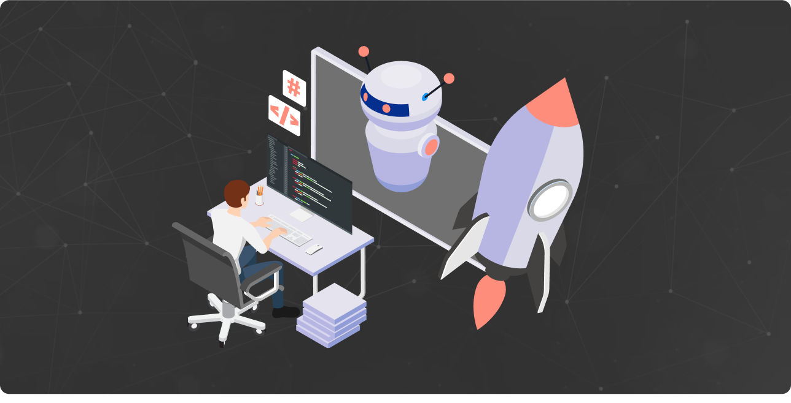

Why On-Demand AI Engineering is Critical for Startups on a Budget

I. Introduction
In today's digital age, artificial intelligence (AI) is rapidly becoming a game-changer across many sectors. From enhancing customer service to predicting trends and smoothing out logistics, AI is truly transforming the way businesses work.
For young startups, AI offers the chance to shake up their industry, improve customer interactions, and gain an edge over rivals. However, bringing AI into daily operations is no simple task. It calls for a deep understanding of AI technologies, skilled AI professionals, and substantial funds - a mix that can be difficult for startups working with tight budgets.
Creating a full-time, in-house AI team can be expensive. The costs of hiring, salaries, employee perks, training, and other operational expenses can quickly add up, making a promising idea financially challenging.
This is where on-demand AI engineering comes in. It gives startups a flexible, affordable way to tap into top AI talent and knowledge, without the costs and commitment of a full-time in-house team. In short, on-demand AI engineering is a scalable solution that lets startups tap into AI's transformative power while efficiently managing their budget.
In this article, we'll dig deeper into on-demand AI engineering, discussing its pros and cons, and how startups can use this model to boost their growth and innovation without breaking the bank.
II. The Rise and Development of On-Demand AI Engineering
The business world is changing rapidly, and one significant shift we've seen in recent years is the move towards on-demand services. Much like you can now summon a ride or order food with just a few taps on your phone, businesses can access specialized skills and services on an as-needed basis. This trend has now reached the world of Artificial Intelligence (AI) with the advent of on-demand AI engineering.
But what does on-demand AI engineering mean? In simple terms, it's a business model where companies can access AI engineers and expertise whenever they need it, without the need for hiring a full-time AI engineer or team. Just as you only pay for a ride or a meal when you order it, you only pay for AI services when you need them. This model is flexible and efficient, allowing businesses to scale up or down their AI capabilities based on their current requirements.To illustrate this concept more tangibly, let's consider the examples of Superside and Design Pickle. Both companies follow an on-demand service model, but for graphic design and creative services. Like ordering a meal from a food delivery app, businesses can request design services from these platforms whenever they need them, without having to employ a full-time designer.
The rise of on-demand AI engineering has been driven by several factors. One significant factor is the rapid development of AI technologies, which has created a high demand for AI expertise that many companies struggle to meet. At the same time, the costs associated with hiring and retaining a full-time AI team can be prohibitive, especially for startups and small businesses. The on-demand model provides a solution to these challenges, offering access to top-tier AI skills at a fraction of the cost and without the long-term commitment associated with traditional employment or outsourcing contracts. As such, on-demand AI engineering is emerging as a game-changer for businesses of all sizes, and particularly for startups operating on a tight budget.
III. Affordable AI Integration through On-demand AI Engineering
The world of startups is often characterized by tight budgets and the need for rapid growth, which makes on-demand AI engineering a particularly appealing prospect. The cost savings achieved through this business model are significant, making AI integration a reality for startups, even those on a limited budget.
One of the key financial benefits of on-demand AI engineering is that you only pay for what you use. This means you're not bearing the cost of a full-time AI team when you only need their services for specific projects or periods. Instead of committing a large chunk of your budget to maintaining an in-house team, you can allocate funds to AI engineering as and when it's required. This flexible approach to budgeting can make a huge difference for startups where every dollar counts.
Additionally, with on-demand AI engineering, the expertise is already there, waiting to be accessed. This eliminates the need for costly recruitment processes, extensive training programs, and the constant race to keep up with the latest developments in AI technology. Essentially, you're leveraging the AI service provider's investment in talent and knowledge, rather than making that hefty investment yourself. For startups looking to make the most of their limited resources while still harnessing the power of AI, on-demand AI engineering offers a cost-effective solution.
IV. Flexibility and Scalability: The Main Benefits ofOn-Demand AI Engineering
The world of business is highly dynamic and ever-changing. With the advent of on-demand AI engineering, businesses now have a powerful tool at their disposal that is both flexible and scalable. It provides an innovative solution to the changing needs of startups and established companies alike.
On-demand AI engineering offers tremendous flexibility. Like a versatile tool in a builder's toolbox, it can be used to address a range of AI challenges as and when they arise. Perhaps a company wants to build an AI-powered recommendation system for its e-commerce platform or needs to analyze vast amounts of data to inform its marketing strategy. With on-demand AI engineering, businesses can tap into the required expertise exactly when it's needed, ensuring they can act swiftly and decisively in response to new opportunities or challenges.
The scalability of on-demand AI engineering is another compelling feature. Think of it as an accordion that can expand or contract based on the melody of the business. If a startup is working on a new AI-based product feature, they can scale up their AI resources to speed up development. Later, if their AI needs decrease, they can just as easily scale down again. This scalability enables companies to manage their resources efficiently, keeping costs under control while also ensuring they have the right skills available when needed.
V. Access to Specialized Skills and Latest Technologies
On-demand AI engineering opens up a vast range of specialized skills and access to the latest technologies for startups, particularly those operating on a budget. These services allow startups to tap into a broad spectrum of AI expertise, from machine learning and neural networks to natural language processing and robotics, without the need to hire full-time employees for each area. In the fast-paced world of AI, technologies and techniques are continually evolving. On-demand services stay at the forefront of these developments, ensuring their clients can benefit from the latest advancements.
On-demand AI engineering offers a substantial advantage for startups by providing immediate access to specialized skills and the latest technologies. Startups can strategically supplement their existing team with specialized AI engineers to tackle specific projects or tasks. This swapping of engineers, based on their unique expertise, allows startups to adapt quickly to changing project requirements and technology trends, thereby offering a significant competitive edge.
Take for example, a startup working on a project requiring expertise in Natural Language Processing (NLP), an AI skill not present in their in-house team. Instead of investing time and resources in hiring and training a full-time NLP expert, the startup can readily avail an on-demand AI engineer with the requisite skills. Similarly, if a project needs experience in TensorFlow or PyTorch, specific engineers with these proficiencies can be brought onboard as required. This flexibility to swap in and out specialized engineers depending on the task at hand ensures a fast, cost-effective and efficient approach to tackling varied AI projects.
VI. The Speed and Efficiency of On-Demand AI Engineering
One of the most significant advantages of on-demand AI engineering is the speed and efficiency it offers. Startups, particularly those on a budget, often need to move quickly and stay agile to keep pace with larger competitors. On-demand AI services can provide instant access to a team of skilled engineers, eliminating the time-consuming process of recruitment. This immediate availability can help startups swiftly implement AI-driven solutions and stay ahead in the digital race. Additionally, on-demand AI services often come with project management built-in, ensuring efficient coordination of tasks and timelines, thus reducing the burden on startups.
Harnessing AI engineering on-call can powerfully speed up development phases and enhance adaptability for startups. By accessing a pool of competent engineers at hand, startups can launch projects swiftly, bypassing the drawn-out wait time usually tied to recruiting and welcoming full-time staff. Moreover, on-call AI engineers generally have a knack for working project-based, allowing them to adapt promptly to new tasks and hence, quicken project schedules even more.
A prime example of this in action is Accently, a budding startup offering an AI-powered accent removal service. They were faced with the task of crafting complex machine learning algorithms for accent neutralization. By utilizing on-call AI engineers, Accently was able to quickly create and test their models. This approach kept their innovation at top speed and their agility high, despite the intricate nature of their endeavor. It also led to faster market penetration as they could greatly reduce the timeline of their project.
Another such example is Designer, an AI-driven UI/UX design startup. Aiming to create AI models for generating unique, user-friendly designs, Designer chose to leverage the expertise of on-call AI engineers. These engineers rapidly developed and trialed AI algorithms, enabling Designer to swiftly advance with their unique offering in the competitive design market. This approach resulted in a quicker deployment of their service, highlighting the efficiency of utilizing on-call engineering talent.
These cases illustrate the potential of on-demand AI engineering in speeding up the pace of innovation, enhancing adaptability, and ensuring quicker market entry for startups.
VII. Risk Reduction with On-Demand AI Engineering
On-demand AI engineering can play a significant role in reducing risks associated with mis-hiring or project failure for startups. Hiring the wrong person for a critical role like an AI engineer can have far-reaching consequences, including wasted resources, delayed projects, and potentially even project failure. For startups operating on a tight budget, these missteps can be crippling. However, with on-demand services, startups can gain access to expert AI engineers who have been vetted and proven capable, thus mitigating the risk of mis-hiring.
Furthermore, on-demand AI engineering services often have stringent vetting processes to ensure the quality of their engineers. These processes might include comprehensive technical assessments, reviews of previous project work, and rigorous interviews. As a result, startups can rest assured that the engineers they're getting have the necessary skills, experience, and professionalism to deliver high-quality work. This quality assurance can significantly reduce the risk of project failure, allowing startups to proceed with more confidence.
Moreover, on-demand services also offer a level of flexibility that can further reduce risk. If a particular engineer or approach isn't working out, startups can more easily pivot with on-demand services. They can quickly bring in a new engineer or shift the project's direction as needed without the logistical and financial headaches of a full-time hire. This level of agility can help startups avoid potential pitfalls and keep their projects on the path to success, making on-demand AI engineering a critical resource for budget-conscious startups.
VIII. Conclusion
In today's digital economy, integrating artificial intelligence into your business strategy isn't an alternative—it's a competitive imperative. As we stride towards an AI-dominant era, businesses failing to adapt risk not only falling behind, but potentially losing out to more technologically agile competitors.
Neural Leap is poised to be your ally in this critical transformation. We provide access to top-notch, fully vetted AI engineers who can augment your team as per your needs. Our scalable solution is designed to foster innovation and efficiency, while remaining within your budgetary constraints.
In the high-speed, AI-driven business landscape, it's crucial that you take assertive steps. The decisions you make today will determine the course your startup will take for years to come. Engage with us for a comprehensive conversation about your AI needs and the unique challenges your business faces.
At Neural Leap, you are not just hiring an AI engineer; you are investing in your business's survival and prosperity. The future of AI is unfolding, and it is time to position your business at the forefront. Act now or your competitors will.